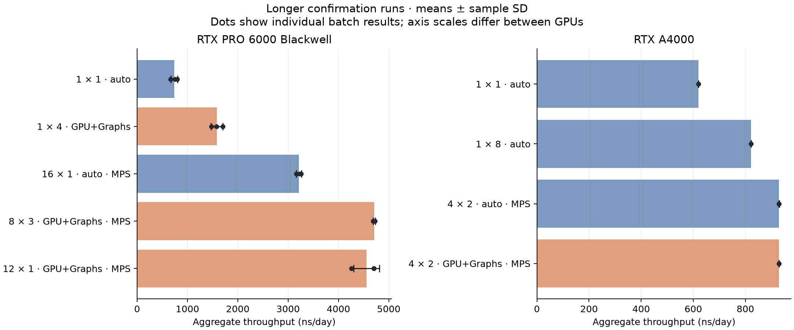
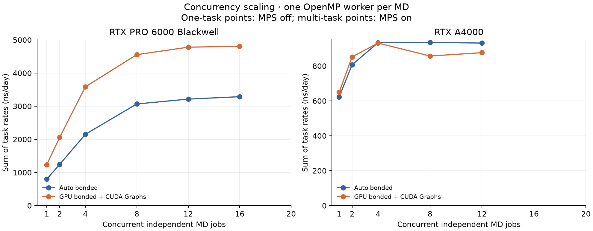

GROMACS GPU concurrency
RTX PRO 6000 Blackwell and RTX A4000 · RNase cubic, 24,040 atoms · GROMACS 2026.1
Confirmed throughput
| GPU | Jobs × threads | CPU workers | Aggregate mean ± sample SD | Full batch mean | Batches |
|---|---|---|---|---|---|
| RTX PRO 6000 Blackwell | 8 × 3 | 24 | 4,711.8 ± 20.9 | 4,417.5 | 3 |
| RTX PRO 6000 Blackwell · fewer CPU workers | 12 × 1 | 12 | 4,556.0 ± 256.8 | 4,301.3 | 3 |
| RTX A4000 | 4 × 2 | 8 | 929.3 ± 0.006 | 912.5 | 2 |
Each job uses one thread-MPI rank. CPU workers = jobs × OpenMP threads per job; MPS and driver helper threads are additional. Aggregate throughput sums each job’s post-warm-up rate. Full-batch throughput includes startup, warm-up and completion tails.
- Blackwell: 8 × 3 produced the highest confirmed mean, 2.97× the fastest confirmed single-job setting (1 × 4, 1,584.5 ± 114.8 ns/day). The comparison combines concurrency and MPS.
- CPU allocation: 12 × 1 retained 96.7% of Blackwell’s peak mean with half the nominal CPU workers; batch variability was higher.
- A4000: 4 × 2 reached approximately 929 ns/day with either auto bonded (929.0 ± 0.4) or GPU bonded + Graphs. The measurements show no clear advantage for the latter.

Concurrency scaling

A4000’s auto-bonded path plateaued at about 933–935 ns/day from 4 to 12 jobs. Blackwell’s GPU-bonded + Graphs path reached about 4,556 ns/day at 8 jobs and 4,781 ns/day at 12 jobs in screening.
A matched Blackwell 8 × 3 screening control measured 4,851.3 ns/day with MPS and 2,229.2 without MPS (2.18×; one batch per setting). GPU bonded and CUDA Graphs were changed together throughout the path comparison.
Test configuration
| Platform | Blackwell workstation | A4000 workstation |
|---|---|---|
| GPU | RTX PRO 6000 Blackwell · ~96 GiB | RTX A4000 · ~16 GiB |
| CPU | Core Ultra 9 285K 8 P-cores + 16 E-cores · 24 threads | Xeon w5-2455X 12 cores · 24 threads |
| OS / GCC | Ubuntu 26.04.1 LTS / 13.4.0 | Ubuntu 24.04.4 LTS / 13.3.0 |
| GROMACS build | AVX2 · sm_120 | AVX-512 · sm_86 |
Software: GROMACS 2026.1, mixed precision; CUDA 13.1.115; FFTW 3.3.10; NVIDIA driver 595.99.02. Blackwell used a declaration-only CUDA/glibc compatibility patch, documented in the build notes.
Run settings: 2 fs timestep; one thread-MPI rank per job; GPU nonbonded and PME; -update auto -notunepme -pin off. The two paths used -bonded auto or -bonded gpu with GMX_CUDA_GRAPH=1. MPS used default scheduling with private pipes and no active-thread partition.
Protocol: screening, 80,000 steps with 20,000 excluded; confirmation, 200,000 steps with 40,000 excluded. All 79 completed batches (432 MD processes) passed the execution audit. Full search results and task memory measurements are available in the dataset.
Results apply to this RNase workload and the tested configurations. Cross-workstation comparisons include CPU and build differences. Batch SD describes observed repeatability; the small sample counts do not establish an ordering between close configurations. A4000 4 × 1 auto bonded reached 933.4 ns/day in screening but did not receive longer confirmation.
Data & methods
Full reportResults CSV ↓Results JSONReproduction commands
Per-job data & auditsConfiguration heatmapsSingle-job CPU scaling